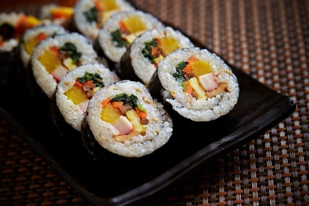

Gimbap

Description
Korean dish made from cooked rice and ingredients such as vegetables, fish, and meats that are rolled in gim—dried sheets of seaweed—and served in bite-sized slices.
Ingredients
- Glutinous White Rice
- Water
- Sesame Oil
- Salt
- Eggs
- Dry Seaweed
- Cucumber
- Carrot
- Cheese
- Ham
- Sesame Oil
Steps
- Rinse the rice in a strainer or colander until the water runs clear. Combine the rice with water in a saucepan. Bring to a boil, then reduce the heat to low; cover and simmer until rice is tender, 12 to 14 minutes. Spread cooked rice onto a baking sheet to cool. Season with 1 tablespoon of sesame oil and salt.
- While the rice is simmering, pour the eggs into a skillet over medium-high heat and allow to cook without stirring or turning to get a flat layer of cooked egg. When egg is completely cooked, remove from skillet and set aside on a cutting board to cool.
- Separate the nori sheets onto a flat surface and divide the cooled rice between them, leaving only a half-inch strip of seaweed visible at the top of each sheet. Arrange strips of egg, cucumber, carrot, cheese, and ham in thin layers on top of the rice. Beginning with the bottom of each sheet of nori, use a bamboo sushi mat to firmly roll each piece into a cylindrical shape. Brush each roll with 1/2 teaspoon of sesame oil and cut into six even pieces.